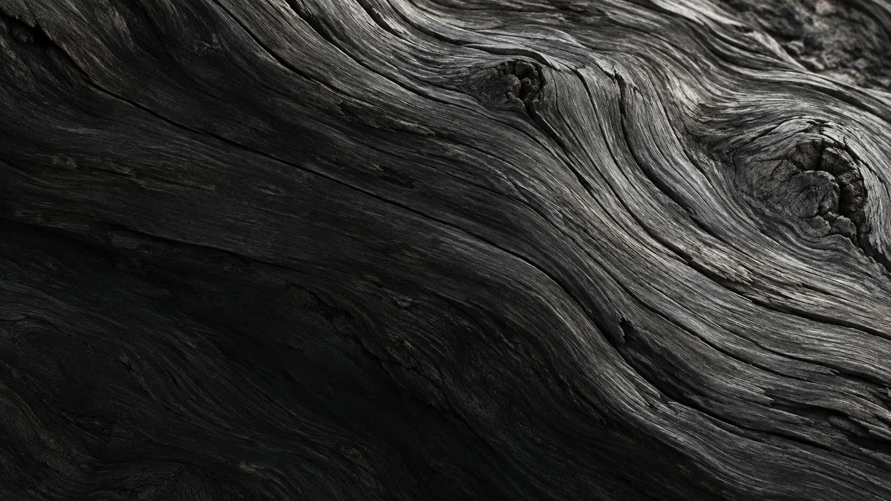
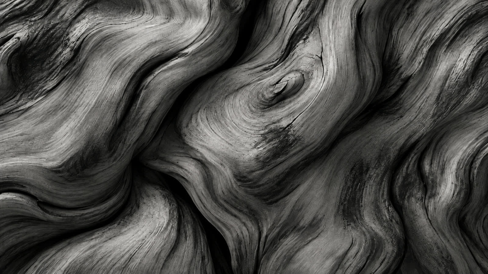
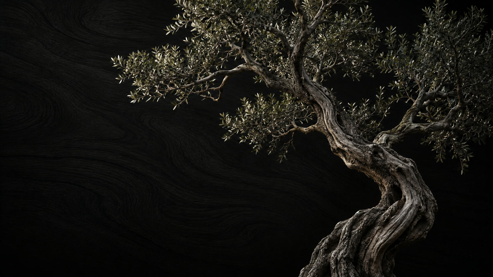
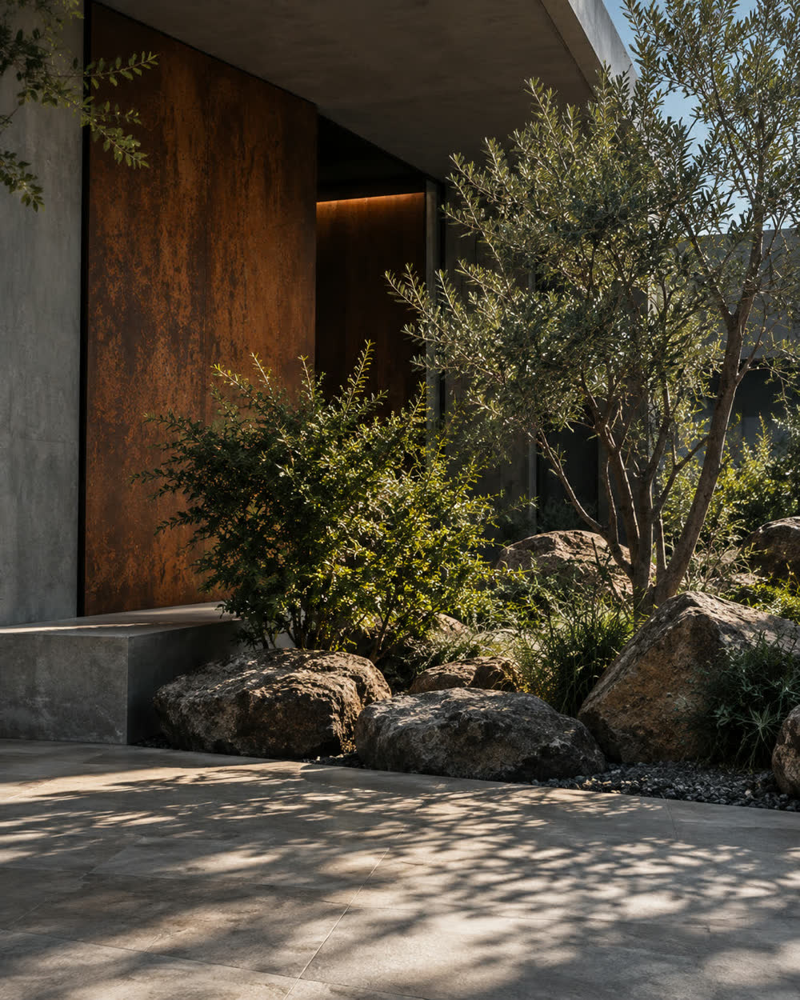
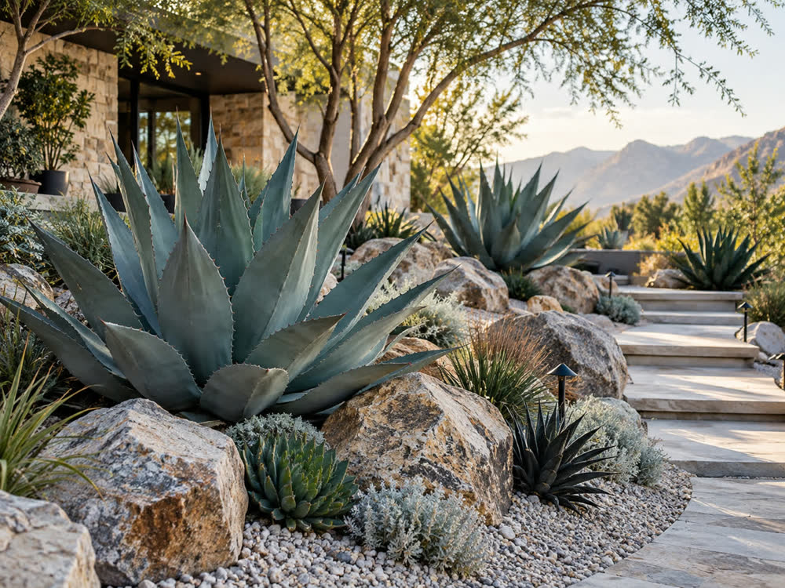

Exterior Works外構・エクステリア工事
門まわり、アプローチ、塀、駐車場、ウッドデッキ。
植栽と同じ目線で、建物まわりをまとめて施工します。



その場所にしかない景色をつくる
Landscape design and exterior works,
Wakayama & Kansai.

Concept
庭を、植物だけで考えない。
土、石、鉄、建物、光と影、
そこで暮らす人。
その組み合わせを読み解き、
その場所にしかない景色をつくる。
植えた日より、十年後が美しい庭を。

Services
個人のお宅の庭から、工務店・設計事務所の外構まで。設計から施工、植えたあとの手入れまで一貫して受けています。
門まわり、アプローチ、塀、駐車場、ウッドデッキ。
植栽と同じ目線で、建物まわりをまとめて施工します。
土づくりから、木と石の配置、下草まで。
住まいの庭、店先、施設の植栽はお任せください。
鉢植えの植物や鉢を販売しています。
商品は Instagram のショップからご覧ください。
剪定、施肥、植え替え。クレーンを使う松の移植や、伐採のような大きな仕事も引き受けます。
催しや展示の植物の演出、植物の出店。
搬入から撤収まで行います。
Mission
私たちは、土や植物に、石・鉄・建物、そして光と影を組み合わせて庭をつくります。
古くから日本の風景にある植物を現代の建築に調和させ、
硬質な素材の隣に風にそよぐ草を配する。素材同士のコントラストが、空間に心地よい表情を生み出します。
Area
Flow
お問い合わせフォーム、またはInstagram の DM にて承ります。
現地で日当たりや土の状態を確認し、暮らし方やお庭の使い方をうかがいます。
プランとお見積りをご提示します。内容にご納得いただいたうえで、施工へ進みます。
土をつくり、石を据え、木を植えます。外構工事もまとめてお任せいただけます。
完成して終わりではありません。植栽のお手入れや定期的なメンテナンスまでお任せください。
和歌山県内の現地調査は無料です。県外の場合は、地域に応じてご相談ください。
Company
Contact
Instagram の DM からも
お問い合わせいただけます。